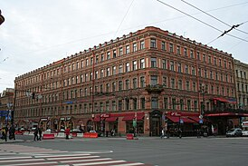

Ресторан Палкин
Ресторан «Палкинъ» размещался по адресу Невский проспект, 47 /
Владимирский проспект, 1 и считался одним из самых знаменитых заведений
общественного питания в дореволюционном Петербурге. Он отличался от
других элитных ресторанов тем, что в нём подавались блюда русской кухни,
а официанты были одеты как половые в трактирах[1]. Заведение называли
царём русской кухни в дореволюционном Санкт-Петербурге[2]. В городе
существовало два одноимённых заведения. Первый — «Старопалкинъ» —
размещался на углу Невского проспекта и Большой Морской улицы, и второй
— «Новопалкинъ» — на углу Невского и Литейного проспектов. Второй
приобрёл широкую известность в городе[2]. Новое заведение также называли
«Владимирским»[3].
|
Историческое здание
Ресторан Палкин

|
| Cтрана |
Россия |
| Город |
Санкт-Петербург, Невский проспект, дом № 47
|
| Тип здания |
Ресторан |
| Дата упразднения |
1917 год |
| Статус |
Объект культурного наследия народов РФ регионального значения
(Санкт-Петербург)
|
История
Первый трактир на углу Невского проспекта и Большой Морской улицы
основал купец третьей гильдии А. С. Палкин в 1785 году. Данное заведение
славилось постным столом[2]. Трактир работал в период моды на
французскую кухню, и купец рекламировал заведение как своеобразную
«Кухню Родины», где подавались блюда на основе древнерусских
рецептов[1]. В «Путеводителе по Петербургу» от 1846 года трактир Палкина
называли заведением с самыми вкусными коренными русскими блюдами. На тот
момент трактир принадлежал внуку Павлу Палкину, блюда там подавались
половыми в кумачовых рубахах. Заведение хвалили за высокое качество блюд
и невысокие цены[2]. Павел Палкин открыл второй трактир в 1850 году на
углу Невского и Литейного проспектов в доме купца Алексеева[2]. Старый и
новый трактиры начали называть «Старопалкиным» и «Новопалкиным». Со
временем «Новопалкинъ» стал одним из самых известных трактиров города.
Когда дело унаследовал правнук К. П. Палкин, он провёл ребрендинг
бизнеса и реконструкцию заведения, решив на его месте открыть ресторан с
европейским сервисом и ввести в меню блюда французской кухни[2]. В
отличие от его предков — ревнителей традиционной кухни, Константин
Палкин хотел привлечь богатых клиентов[4] и для этого реконструировал
здание с приспособлением его для размещения крупного ресторана по
проекту академика архитектуры Андрея Карловича Кейзера. Помимо
ресторана, в доме открылась банкирская контора, меняльная лавка,
парикмахерская и несколько магазинов[2][5]. Обновлённое помещение
ресторана выделялось своей обширностью и роскошью, в ресторане было 25
залов, бильярдная и бассейн со стерлядями[6]. Лестница, ведущая в
бельэтаж, была украшена фонтаном и тропическими растениями. Кухня была
размещена на верхнем этаже, чтобы в остальные помещения ресторана не
проникал дым. Приготовленная еда опускалась на нижние этажи особою
машиной[6]. Несмотря на введение французских блюд, ресторан по-прежнему
был прежде всего известен из-за подачи русских блюд. В праздничные дни
подавались французские блюда вперемешку с русской по будням. Ресторан
также подавал своё знаменитое в городе фирменное блюдо — куриные котлеты
«по-палкински»[7]. После смерти К. П. Палкина его семья сдала ресторан в
аренду купцу В. И. Соловьёву, который владел гастрономическим магазином
в том же здании. Соловьёв также владел «Большой северной» гостиницей на
Знаменской площади[7]. Он ввёл так называемые воскресные обеды с
музыкой, исполнявшейся оркестром лейб-гвардии Преображенского полка.
Соловьёв также ввёл в меню своё фирменное блюдо «парфе а-ля
Соловьёв»[8]. Для данных нужд купец перестроил здание, надстроив его
пятым этажом по проекту архитектора Александра Сергеевича Хренова в
1904—1906 годах[5]. В новом концертном зале в начале XX века выступали в
том числе неаполитанцы или румынский оркестр[9]. В 1914 году в
Российской империи был введён сухой закон, который губительно сказался
на заведении, да и в целом на городском ресторанном бизнесе, и к 1917
году «Палкинъ» прогорел и закрылся[5]. Его помещения переоборудовали под
тюремные камеры, которых не хватало в Петрограде[10]. В 1925 году зал
бывшего ресторана переоборудовали под кинотеатр «Титан»[5]. В 1990-е
годы в бывших помещениях кинотеатра ЗАО «СЭТ-Гейм» открыло казино[11] и
расселило находящуюся над ним коммунальную квартиру[12]. На полученные
доходы на третьем этаже был открыт ресторан под именем «Палкинъ»[11],
который размещается в шести залах из 25 исторических[11]. Были
восстановлены исторические интерьеры[5], хотя и с некоторыми
нововведениями — например, в виде плазменных телевизионных экранов или
ламп в стиле модерн[11], также предприниматели восстановили чугунный
балкон[12]. В меню включили некоторые старинные блюда[5].
Посетители ресторана
Основными посетителями «Палкина» были представители средних сословий —
литераторы, лавочники, подрядчики, преподаватели, служащие департаментов
и т. д.[4] В ресторане было оборудовано 25 залов в том числе и потому,
что представители разных сословий не любили мешаться между собой,
например в ресторане имелись одни залы, предназначенные для дворян и
другие залы для купцов. За счёт такого разделения гости могли проводить
в ресторане столько времени, сколько им хотелось и не вступать в
конфликты[1]. Ресторанные залы превращались в своеобразные клубы, где
любили собираться компании приятелей[4]. Писатели предпочитали
собираться в буфетной комнате с нижним ярусом оконных стекол с
изображением сцен из из «Собора Парижской Богоматери» Гюго. Их беседы
любили подслушивать другие посетители ресторана[13][14]. Здесь также
обедали выпускники петербургских вузов и богатые провинциалы[14].
Ресторан особенно ценил писателей — клиентов[9], так как своим
постоянным пребыванием они делали рекламу заведению[5]. За время
существования ресторана, его посещало множество знаменитых общественных
и культурных деятелей — Гоголь, Достоевский, Лесков, Мей, Некрасов,
Панаев, Салтыков-Щедрин, Щербина, Бальмонт, Блок, Мережковский, Гиппиус,
Горький, Кузмин, Куприн, Суворин, Фидлер, Чехов, Каратыгин, Мартынов,
Юрьев, художники Лукомский, Репин, Сапунов, композиторы Глазунов,
Римский-Корсаков, Чайковский и другие[9]. По этой же причине ресторан не
раз упоминался в классических произведениях, например в «Мёртвых Душах»
Гоголя или в рассказе «Без места» Чехова[3]. Ресторан в 1880-е годы стал
своеобразным гей-клубом среди так называемых «теток» — богатых
гомосексуальных мужчин[15]. Заведение прилегало к «гомосексуальному
маршруту», по которому гуляли тетки в поисках проститутов или любовников
в дореволюционном Петербурге[16]. В ресторане работал лакей Зайцев,
поставлявший теткам в отдельные кабинеты для любовных утех солдат и
юношей — проститутов. Для этой цели ресторан тайно посещал князь Сергей
Александрович[15]. Формированию гей-клуба способствовал публицист,
писатель и гомосексуал князь Мещерский, чья типография реакционной
газеты «Гражданин» располагалась в том же здании[17].